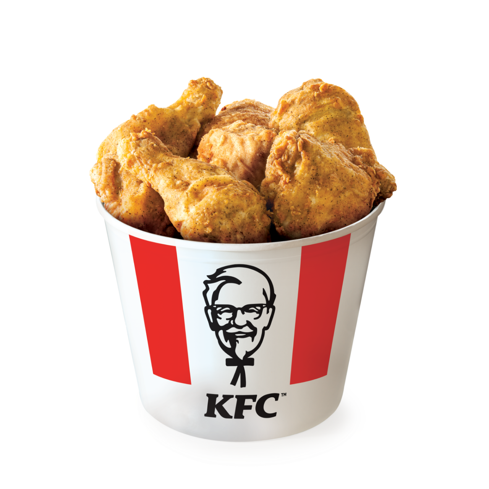

Fried Chicken

-Description
Fried chicken is a popular dish made by coating chicken pieces in a seasoned batter or breading and then deep-frying them until crispy and golden brown. The chicken is typically marinated in buttermilk or a blend of spices before frying, enhancing its flavor and tenderness. The crispy exterior contrasts with the juicy, tender meat inside, creating a satisfying texture. Variations of fried chicken can be found worldwide, with each culture adding its unique twist, from Southern-style buttermilk fried chicken in the United States to Korean fried chicken with its signature sweet and spicy glaze. It's often served with sides like coleslaw, mashed potatoes, or biscuits.
-Ingredients
- Chicken pieces (drumsticks, thighs, wings, breasts)
- Buttermilk (for marinating)
- All-purpose flour
- Salt
- Black Pepper
- Paprika
- Garlic Powder
- Onion
- Cayenne pepper (optional, for heat)
- Eggs (for binding)
- Cooking oil (such as vegetable, canola, or peanut oil)
-Steps:
- Marinate the chicken:
Place the chicken pieces in a bowl.
Pour buttermilk over the chicken to cover.
Add salt, pepper, and any other preferred seasonings.
Cover and refrigerate for at least 1 hour, preferably overnight.
- Prepare the coating:
In a shallow dish, mix all-purpose flour with salt, black pepper, paprika, garlic powder, onion powder, and cayenne pepper (if using).
- Heat the oil:
Pour cooking oil into a deep skillet or heavy-bottomed pot to a depth of about 1-2 inches.
Heat the oil over medium-high heat to 350°F (175°C).
- Coat the chicken:
Remove the chicken pieces from the buttermilk, letting the excess drip off.
Dip each piece into the seasoned flour mixture, coating thoroughly and shaking off the excess.
- Fry the chicken:
Carefully place the coated chicken pieces into the hot oil.
Fry in batches to avoid overcrowding the pan.
Cook for about 12-15 minutes, turning occasionally, until the chicken is golden brown and cooked through (internal temperature should reach 165°F or 74°C).
- Drain and serve:
Remove the fried chicken from the oil and place it on a wire rack or paper towels to drain excess oil.
Let it rest for a few minutes before serving to allow the juices to redistribute.
Enjoy your crispy, delicious fried chicken!